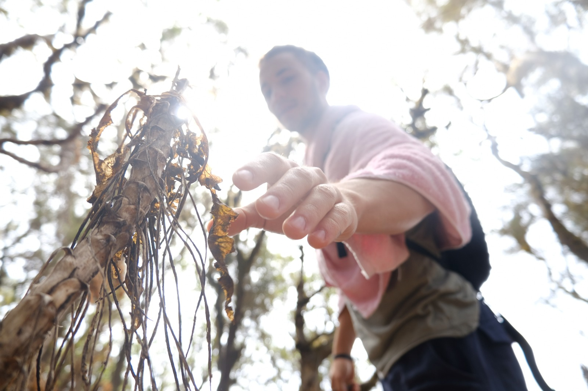

Wer sich in meiner Abwesenheit mit meinen vergangenen/aktuellen Projekten, Visionen und mehr beschaeftigen moechte, wird hier fuendig werden.
Aktuelle Projekte

Diese Website ist unvollstaendig und aendert sich dynamisch.
akademische/IT Projekte
- Masterarbeit bei Prof. Frank Kurth (2023)
- Solide Basis anfbauen an Faehigkeiten relevant fuer IT-Systemadministration/DevOps/IT-Management (2024)
Physische Praxis
- Basic Callisthenics Workout 4x die Woche
- Fruehling 2024 : +50kg Pullup/Dip + Handstand Push Up + 140kg Deadlift
- Sommer 2024 : Hinderniss-Marathon laufen.
Herzensprojekte
- Ein Uni-Sportkurs geben zu Movement Practice (zum Angebot)
- Hohes Mass an Achtsamkeit im Alltag u.a. durch regelmaessige Achtsamkeitspraxis (Movement flows, Pranayama, Waldbaden, primal/social dance)
Meine Visionen weisen mir die naechsten Projekte.
Unter Angebote und Portfolio finden sich Fruechte und Aufnahmen vergangener Projekte.